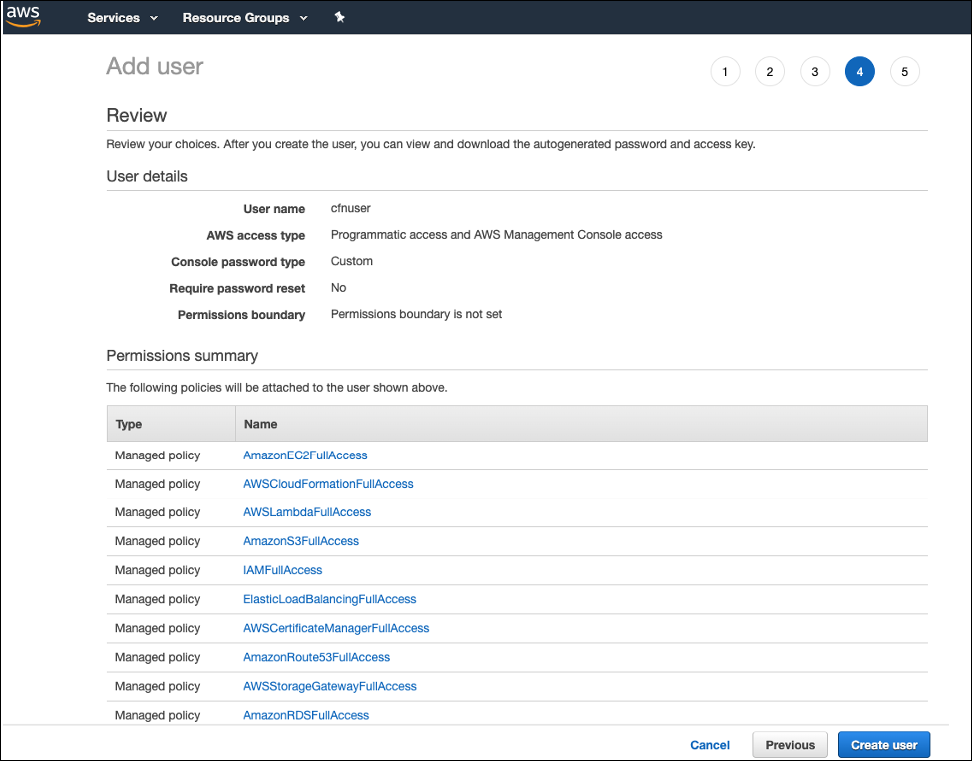

UIPath Orchestrator on AWS on the AWS Cloud
Quick Start Reference Deployment

December 2020
Adrian Tudoran, Andrei Barbu, and Binoy Das UIPath
Shivansh Singh, Tony Bulding, AWS Quick Start team
| Visit our GitHub repository for source files and to post feedback, report bugs, or submit feature ideas for this Quick Start. |
This Quick Start was created by UIPath in collaboration with Amazon Web Services (AWS). Quick Starts are automated reference deployments that use AWS CloudFormation templates to deploy key technologies on AWS, following AWS best practices.
Overview
This guide provides instructions for deploying the UIPath Orchestrator Quick Start reference architecture on the AWS Cloud.
This Quick Start is for users who want the convenience of deploying UiPath Orchestrator web application on AWS cloud. It deploys UiPath Orchestrator which manages robotic automation processes, allowing users to automate attended and unattended process task within their enterprise environment.
| Amazon may share user-deployment information with the AWS Partner that collaborated with AWS on the Quick Start. |
UIPath Orchestrator on AWS on AWS
UIPath Orchestrator is a web application that enables you to securely schedule, manage and control your enterprise-wide digital workforce of UiPath Robots.
Orchestrator lets you manage the creation, monitoring, and deployment of RPA resources in your environment, acting as an integration point with third-party solutions and applications.
UiPath Orchestrator’s power comes from its capability of managing your entire Robot fleet. Attended, Unattended or Nonproduction, they can all be connected and executed from this centralized point.
-
Attended - This type of Robot is triggered by user events, and operates alongside a human user, sharing the same workstation. Attended Robots are used with Orchestrator for centralized process deployment and logging. They can also add data into a queue, to be processed by Unattended robots.
-
Unattended - Robots run unattended in virtual environments and can automate any number of processes. On top of the Attended Robot capabilities, the Orchestrator is responsible for remote execution, monitoring, scheduling and providing support for work queues.
-
Development - has the capabilities of an Unattended Robot but intended only for development purposes.
-
Nonproduction - similar to Unattended Robots but intended only for development and testing purposes.
You are able to run debugging in UiPath Studio with all types of Robots.
Cost
You are responsible for the cost of the AWS services used while running this Quick Start. There is no additional cost for using the Quick Start.
The AWS CloudFormation templates for Quick Starts include configuration parameters that you can customize. Some of the settings, such as the instance type, affect the cost of deployment. For cost estimates, see the pricing pages for each AWS service you use. Prices are subject to change.
| After you deploy the Quick Start, create AWS Cost and Usage Reports to deliver billing metrics to an Amazon Simple Storage Service (Amazon S3) bucket in your account. These reports provide cost estimates based on usage throughout each month and aggregate the data at the end of the month. For more information, see What are AWS Cost and Usage Reports? |
Software licenses
This Quick Start requires separate licenses for UiPath. To use the Quick Start in your production environment, contact UiPath sales team and sign up for a license at https://www.uipath.com/company/contact-us. When you launch the Quick Start, provide the license keys for Orchestrator and HAA component as input parameters to the CloudFormation stack. If no license keys are provided, the deployment is not affected but you will need to manually license the components after the stack was created.
If you want to try the product before purchasing, you can request a trial license at https://www.uipath.com/developers/studio-download. The trial license gives you 60 days of free usage in a non-production environment. After this time, you can upgrade to a production license.
The Quick Start uses only uses AWS provided RHEL and Windows images and does not require any subscription to the Amazon Machine Image (AMI).
Architecture
Deploying this Quick Start for a new virtual private cloud (VPC) with default parameters builds the following UIPath Orchestrator environment in the AWS Cloud.

As shown in Figure 1, the Quick Start sets up the following:
-
A highly available architecture that spans two Availability Zones.*
-
A VPC configured with public and private subnets, according to AWS best practices, to provide you with your own virtual network on AWS.*
-
In the public subnets:
-
Managed network address translation (NAT) gateways to allow outbound internet access for resources in the private subnets.*
-
A Windows bastion host to allow inbound RDP access to EC2 instances in private subnets.
-
S3 bucket for storage of the NuGet packages (the automations that are executed by the robots are delivered through Orchestrator)
-
-
In the private subnets:
-
Only multi-node option for high availability is available and it creates the following:
-
Autoscaling group with up to 20 EC2 instances, based on Windows Server 2019, for Orchestrator Web app
-
An RDS instance with SQL server for UiPath database
-
An Application Load Balancer to balance the traffic in a Round Robin algorithm between the Orchestrator nodes
-
High Availability Add-on for Orchestrator – a 3 nodes cluster with Linux machines, for the in-memory database that is used as shared cache by all the Orchestrator instances
-
S3 File Storage Gateway to enable easy access to S3 files via a mapped network drive
-
-
Planning the deployment
Specialized knowledge
This deployment requires a moderate level of familiarity with AWS services. If you’re new to AWS, visit Getting Started with AWS and Training and Certification. These sites provide materials for learning how to design, deploy, and operate your infrastructure and applications on the AWS Cloud.
This Quick Start also assumes familiarity with AWS Services.
AWS Auto Scaling
AWS account
If you don’t already have an AWS account, create one at https://aws.amazon.com by following the on-screen instructions. Part of the sign-up process involves receiving a phone call and entering a PIN using the phone keypad.
Your AWS account is automatically signed up for all AWS services. You are charged only for the services you use.
Technical requirements
Before you launch the Quick Start, your account must be configured as specified in the following table. Otherwise, deployment might fail.
Resource quotas
If necessary, request service quota increases for the following resources. You might request quota increases to avoid exceeding the default limits for any resources that are shared across multiple deployments. The Service Quotas console displays your usage and quotas for some aspects of some services. For more information, see What is Service Quotas? and AWS service quotas.
| Resource | This deployment uses |
|---|---|
VPCs |
1 |
Subnets |
Up to 6 |
NAT Gateways |
2 |
VPC Endpoints |
1 |
Internet Gateways |
1 |
Elastic IP addresses |
Up to 6 |
IAM security groups |
1 |
IAM roles |
Up to 8 |
Storage Gateway |
1 |
Auto Scaling groups |
1 |
Application Load Balancers |
1 |
Public CA |
1 |
Hosted Zone |
1 |
RDS Instance |
1 |
RHEL instances |
3 |
Bastion Hosts |
1 |
Supported Regions
This Quick Start supports the following Regions:
-
us-east-1 (N. Virginia)
-
us-east-2 (Ohio)
-
us-west-1 (N. California)
-
us-west-2 (Oregon)
-
ca-central-1 (Canada)
-
eu-central-1 (Frankfurt)
-
eu-west-1 (Ireland)
-
eu-west-2 (London)
-
eu-west-3 (Paris)
-
eu-north-1 (Stockholm)
-
sa-east-1 (São Paulo)
-
ap-south-1 (Mumbai)
-
ap-northeast-1 (Tokyo)
-
ap-northeast-2 (Seoul)
-
ap-southeast-1 (Singapore)
-
ap-southeast-2 (Sydney)
| Certain Regions are available on an opt-in basis. See Managing AWS Regions. |
EC2 key pairs
Make sure that at least one Amazon EC2 key pair exists in your AWS account in the Region where you plan to deploy the Quick Start. Make note of the key pair name. You need it during deployment. To create a key pair, see Amazon EC2 key pairs and Linux instances.
For testing or proof-of-concept purposes, we recommend creating a new key pair instead of using one that’s already being used by a production instance.
IAM permissions
Before launching the Quick Start, you must sign in to the AWS Management Console with IAM permissions for the resources that the templates deploy. The AdministratorAccess managed policy within IAM provides sufficient permissions, although your organization may choose to use a custom policy with more restrictions. For more information, see AWS managed policies for job functions.
Prepare your AWS account
Key Pair
Make sure that at least one Amazon EC2 key pair exists in your AWS account in the Region where you plan to deploy the Quick Start. Make note of the key pair name. You need it during deployment. To create a key pair, follow the instructions in the AWS documentation.
For testing or proof-of-concept purposes, we recommend creating a new key pair instead of using one that’s already being used by a production instance.
SSL Certificate
This QuickStart request a certificate from AWS Certificate Manager, and uses DNS validation to automatically validate the certificate using the DNS for hosted zone that you have set up. If you do already have a public cert that you want to bring on, you can do so by providing the ARN of your certificate.
Valid Domain Name
This Quickstart assumes you have established ownership of the parent domain you want to use under which the web-application will be served. In order to do so, you should have a Hosted Zone setup within your AWS account, with required NS, SOA, CNAME, and TXT records. For further details on how to create a public hosted zone, refer to Route53 documentation.
Prepare your UIPath account
This Quick Start uses AWS owned AMI. However, during initiation of EC2 VMs, it downloads, installs and configures UiPath Orchestrator and HA Addon software. In order to do so, you need to first purchase the license keys by contacting UiPath directly.
Deployment options
This Quick Start provides a single deployment option:
-
Deploy UIPath Orchestrator into a new VPC. This option builds a new AWS environment consisting of the VPC, subnets, NAT gateways, security groups, bastion hosts, and other infrastructure components. It then deploys UIPath Orchestrator into this new VPC.
This Quick Start only provides end-to-end deployment option, meaning it builds a new VPC, set of Subnets, NAT Gateways, Internet Gateway, Security groups, Bastion host and other components for you. In order to setup the complete networking and routing infrastructure you need to provide only the CIDR block for the VPC that you wish to create.
The Quick Start provides templates for this option. It however lets you configure instance types and software settings such as license keys, user names and passwords, as discussed later in this guide.
Deployment steps
Sign in to your AWS account
-
Sign in to your AWS account at https://aws.amazon.com with an IAM user role that has the necessary permissions. For details, see Planning the deployment earlier in this guide.
-
Make sure that your AWS account is configured correctly, as discussed in the Technical requirements section.
Launch the Quick Start
| You are responsible for the cost of the AWS services used while running this Quick Start reference deployment. There is no additional cost for using this Quick Start. For full details, see the pricing pages for each AWS service used by this Quick Start. Prices are subject to change. |
Each deployment takes about 25 minutes to complete.
-
Sign in to your AWS account, and launch the AWS CloudFormation template.
-
Check the AWS Region that’s displayed in the upper-right corner of the navigation bar, and change it if necessary. This Region is where the network infrastructure for UIPath Orchestrator is built. The template is launched in the us-east-1 Region by default.
-
On the Create stack page, keep the default setting for the template URL, and then choose Next.
-
On the Specify stack details page, change the stack name if needed. Review the parameters for the template. Provide values for the parameters that require input. For all other parameters, review the default settings and customize them as necessary. For details on each parameter, see the Parameter reference section of this guide. When you finish reviewing and customizing the parameters, choose Next.
-
On the Configure stack options page, you can specify tags (key-value pairs) for resources in your stack and set advanced options. When you’re finished, choose Next.
-
On the Review page, review and confirm the template settings. Under Capabilities, select the two check boxes to acknowledge that the template creates IAM resources and might require the ability to automatically expand macros.
-
Choose Create stack to deploy the stack.
-
Monitor the status of the stack. When the status is CREATE_COMPLETE, the UIPath Orchestrator deployment is ready.
-
Use the values displayed in the Outputs tab for the stack, as shown in Figure 2, to view the created resources.


Create a key pair
Create a key pair in your preferred region. To do this, in the navigation pane of the Amazon EC2 console, choose Key Pairs, Create Key Pair, type a name, and then choose Create. Amazon EC2 uses public-key cryptography to encrypt and decrypt login information. To be able to log into your instances, you must create a key pair. With Windows instances, we use the key pair to obtain the administrator password via the Amazon EC2 console and then log in using Remote Desktop Protocol (RDP) as explained in the step-by-step instructions in the Amazon Elastic Compute Cloud User Guide. On Linux, we use the key pair to authenticate SSH login.

Create IAM User
To launch the Cloudformation stack for this quickstart, you’ll need to use a user login that has programmatic access to following AWS services:
-
AWS CloudFormation
-
AWS IAM, Amazon EC2
-
Amazon S3
-
Amazon RDS
-
Amazon Route53
-
AWS Certificate Manager
-
AWS Elastic Load Balancer
-
AWS Lambda
-
AWS Storage Gateway.
If you do already have an IAM user that has full access to the above services, or have Admin access, you can skip this step.
-
If you do not already have such an IAM user, create an IAM user from AWS console. In the example below, a user “cfnuser” is being created allowing programmatic access and console access.
 Figure 5. Create IAM User
Figure 5. Create IAM User
-
In order to follow AWS best practices, allow access to the required services. In order to do so, you can choose to attach existing policies. Then type first few letters of each service name and select to choose the FullAccess roles from the filtered list. The example here shows the screen for adding AmazonEC2FullAccess.
 Figure 6. Create IAM User
Figure 6. Create IAM UserRepeat this step for all 10 services listed above.
-
Click on Next: Tags, and optionally add a Name tag to identify the user.
 Figure 7. Create IAM User
Figure 7. Create IAM User -
Click on Next: Review and review to ensure that full access to all 10 listed services have been granted to the user.
Figure 8. Create IAM User -
Click on Create User to have the user created, and finally download the credential as CSV and store it in a secure location for future referral, if needed.
 Figure 9. Create IAM User
Figure 9. Create IAM User
Purchase UiPath License
This Quick Start uses AWS owned AMI. However, during initiation of EC2 VMs, it downloads, installs and configures UiPath Orchestrator and HA Addon software. In order to do so, you need to first purchase the license keys by contacting UiPath directly.
Test the deployment
Check if the Orchestrator was deployed successfully accessing the ALB endpoint URL. The result should look lke Figure 10 below

Check if HAA nodes were deployed successfully accessing any endpoint IP via https://haa-ip:8443 from the Bastion host, then look at the tab nodes and check if all nodes are present.


Check if Orchestrator can upload to S3 bucket via FileGateway server.
Login to Orchestrator accessing the ALB endpoint URL with the specified credentials at the deployment, select Packages> Upload button > Select a NuGet package and press the Upload Button.

Best practices for using UIPath Orchestrator on AWS
High Availability and Disaster Recovery
Amazon EC2 provides the ability to place instances in multiple locations composed of AWS Regions and Availability Zones. Regions are dispersed and located in separate geographic areas. Availability Zones are distinct locations within a Region that are engineered to be isolated from failures in other Availability Zones and that provide inexpensive, low-latency network connectivity to other Availability Zones in the same Region.
By launching your instances in separate Regions, you can design your application to be closer to specific customers or to meet legal or other requirements. By launching your instances in separate Availability Zones, you can protect your applications from the failure of a single location. Exchange provides infrastructure features that complement the high availability and disaster recovery scenarios supported in the AWS Cloud.
The architecture built by this Quick Start supports AWS best practices for high availability and security.
Automatic Failover
Deploying this Quick Start with the default parameters configures an Autoscaling Group with Orchestrator Instances with 3 HAA clustered nodes or EC2 Instances for Robot solution
The Quick Start implementation supports the following scenarios:
-
Protection from the failure of a single instance
-
Automatic failover between the HAA cluster nodes
-
Automatic failover between Availability Zones
However, the Quick Start default implementation doesn’t provide automatic failover in every case. For example, the loss of Availability Zone 1 and Zone 2, which contains the primary and secondary HAA node, would prevent automatic failover to Availability Zone 3. This is because the cluster would fail as it loses quorum. In this scenario, you could follow manual disaster recovery steps that include rebuild the cluster missing nodes (at least 2 must be available) by running :
curl -fsSL http://download.uipath.com/haa/get-haa.sh | bash -s -- -u username-available-node -p password-available-node -j ip-available-node
to restore the HAA module. As a last resort, even if all nodes are lost, you can rebuild the entire HAA cluster and the in-memory database is regenerated from SQL DB.
The Quick Start also provides an option to deploy into minimum two Availability Zones. This deployment option can mitigate the loss of quorum in the case of a failure of a single node. However, you can select this option only in AWS Regions that include two or more Availability Zones; for a current list, see AWS Global Infrastructure.
We recommend that you consult the UiPath docs and customize some of the steps described in this guide or add ones to deploy a solution that best meets your business, IT, and security requirements.
Due to Autoscaling Group, Autoscaling Group rules (CloudWatch rules) and Launch Config, if any instance of Orchestrator is down, another one is being created in the desired state as long as Nuget packages are stored in S3 or any shared storage and DB is RDS type.
Security
Security Groups and Firewalls
When the EC2 instances are launched, they must be associated with a security group, which acts as a stateful firewall. You have complete control over the network traffic entering or leaving the security group, and you can build granular rules that are scoped by protocol, port number, and source or destination IP address or subnet. By default, all traffic egressing a security group is permitted. Ingress traffic, on the other hand, must be configured to allow the appropriate traffic to reach your instances.
We recommend that you tightly control ingress traffic, so that you reduce the attack surface of your EC2 instances but allowing following ports open for application communication:
HAA

Orchestrator and Robot Ports
80, 443 for instances behind ALB
443 for ALB and Robots
3389 for Robots and Orchestrators
Other Ports and usage:
22 for SSH into HAA nodes
1433 for MSSQL
EC2 Storage Gateway Ports:
2049, 111, 20048, 35790, 49000, 54524 – NFS service
For UiPath Orchestrator security best practices, refer to UiPath docs
Other useful information
AWS provides a set of building blocks (for example, Amazon EC2 and Amazon VPC) that you can use to provision infrastructure for your applications. In this model, some security capabilities, such as physical security, are the responsibility of AWS and are highlighted in the AWS security whitepaper. Other areas, such as controlling access to applications, fall on the application developer and the tools provided in the Microsoft or Linux (RHEL) ecosystem.
This Quick Start configures the following security groups for UiPath Stack (Robot or Orchestrator):
| Security group | Associated with | Inbound source | Ports |
|---|---|---|---|
autoscaling-group-security-group |
ASG |
Private subnets CIDR |
Inbound: 80, 443, 3389 |
db-security-group |
MSSQL or RDS |
Private subnets CIDR |
Inbound: 1433 |
bastion-security-group |
Bastion Host |
0.0.0.0/0 |
Inbound: 3389 |
filegateway-security-group |
FileGateway |
VPC CIDR, Security CIDR block |
Inbound: 2049, 111, 20048, 80, 35790, 49000, 54524, 55481 |
haa-security-group |
HAA cluster |
Private subnets CIDR |
Inbound: 22,8443, 80, 443,9443,1968,3333-3339, 36379-36380, 8001, 9443,8444, 9080, 9081, 8070-8071, 10000-19999, 20000-29999, 53, 5353 |
alb-security-group |
Load balancer |
0.0.0.0/0 |
Inbound: 443 |
FAQ
Q. I encountered a CREATE_FAILED error when I launched the Quick Start.
A. If AWS CloudFormation fails to create the stack, relaunch the template with Rollback on failure set to Disabled. This setting is under Advanced in the AWS CloudFormation console on the Configure stack options page. With this setting, the stack’s state is retained, and the instance keeps running so that you can troubleshoot the issue. (For Windows, look at the log files in %ProgramFiles%\Amazon\EC2ConfigService and C:\cfn\log.)
| When you set Rollback on failure to Disabled, you continue to incur AWS charges for this stack. Delete the stack when you finish troubleshooting. |
For more information, see Troubleshooting AWS CloudFormation.
Q. I encountered a size-limitation error when I deployed the AWS CloudFormation templates.
A. Launch the Quick Start templates from the links in this guide or from another S3 bucket. If you deploy the templates from a local copy on your computer or from a location other than an S3 bucket, you might encounter template-size limitations. For more information, see AWS CloudFormation quotas.
Troubleshooting
<Steps for troubleshooting the deployment.>
Parameter reference
Unless you are customizing the Quick Start templates for your own deployment projects, we recommend that you keep the default settings for the parameters labeled Quick Start S3 bucket name, Quick Start S3 bucket
Region, and Quick Start S3 key prefix. Changing these parameter settings automatically updates code references to point to a new Quick Start location. For more information, see the AWS Quick Start Contributor’s Guide.
|
Launch into a new VPC
| Parameter label (name) | Default value | Description |
|---|---|---|
Availability Zone(s) selection
( |
|
List of Availability Zones to use for the subnets in the VPC - maximum of 3 AZs are used for this deployment (logical order of your selections is preserved). |
Number of AZs to use
( |
|
Number of Availability Zones to use in the VPC (upto 3), must match your selections in the list of Availability Zones parameter. |
| Parameter label (name) | Default value | Description |
|---|---|---|
VPC CIDR
( |
|
CIDR block for the VPC, must be in the form x.x.0.0/16. |
Public subnet 1 tag
( |
|
Tag to add to public subnet 1 in format Key=Value (Optional) |
Public subnet 2 tag
( |
|
Tag to add to public subnet 2 in format Key=Value (Optional). |
Public subnet 3 tag
( |
|
Tag to add to public subnet 3 in format Key=Value (Optional). |
Private subnet 1 tag
( |
|
Tag to add to private subnet 1 in format Key=Value (Optional). |
Private subnet 2 tag
( |
|
Tag to add to private subnet 2 in format Key=Value (Optional). |
Private subnet 3 tag
( |
|
Tag to add to private subnet 3 in format Key=Value (Optional). |
| Parameter label (name) | Default value | Description |
|---|---|---|
Instance Key pair
( |
|
Existing Key Pair, which is to be used to Log in to VM instances. |
Instance type
( |
|
EC2 instance type |
| Parameter label (name) | Default value | Description |
|---|---|---|
Storage Gateway
( |
|
Name of S3 File Storage Gateway. |
NO_LABEL
( |
|
Timezone to choose for File Gateway |
| Parameter label (name) | Default value | Description |
|---|---|---|
Hosting FQDN
( |
|
The fully qualified domain name where the UiPath Orchestrator should be installed |
Route 53 Hosted Zone Id
( |
|
The Route 53 hosted zone Id |
| Parameter label (name) | Default value | Description |
|---|---|---|
HA Addon Username
( |
|
High Availability Add-on username. A valid email must be used as username |
HA Addon Password
( |
|
High Availability Add-on password. |
HA Addon Port
( |
|
Port on which High Availability Add-on listens to |
HA Addon License Key
( |
|
License key, purchased from UIPath, to be used with the High Availability Add-on. |
| Parameter label (name) | Default value | Description |
|---|---|---|
RDS Database Name
( |
|
Name for UIPath Database to be created. |
RDS Allocated Storage
( |
|
Storage amount to be allocated to RDS DB Instance. |
Maximum allocated storage
( |
|
The upper limit to which Amazon RDS can automatically scale the storage of the DB instance. |
DB Username
( |
|
Username to be used to log on to Database. |
DB Password
( |
|
Password to be used to log on to Database. |
| Parameter label (name) | Default value | Description |
|---|---|---|
Orchestrator Version Number
( |
|
UIPath Orchestrator Version to be installed. |
Orchestrator Instance Count
( |
|
Desired Capacity (instance count) for Orchestrator instances. |
Orchestrator License Key
( |
|
License key, purchased from UiPath, or trial key. If not provided, Orchestrator will be unlicensed |
Orchestrator Password
( |
|
Orchestrator Administrator password to login as. |
| Parameter label (name) | Default value | Description |
|---|---|---|
Template hosting Bucket
( |
|
S3 bucket name hosting the Quickstart templates. |
Template folder
( |
|
S3 key prefix under which Quick Start templates are hosted. |
Send us feedback
To post feedback, submit feature ideas, or report bugs, use the Issues section of the GitHub repository for this Quick Start. To submit code, see the Quick Start Contributor’s Guide.
Quick Start reference deployments
See the AWS Quick Start home page.
GitHub repository
Visit our GitHub repository to download the templates and scripts for this Quick Start, to post your comments, and to share your customizations with others.
Notices
This document is provided for informational purposes only. It represents AWS’s current product offerings and practices as of the date of issue of this document, which are subject to change without notice. Customers are responsible for making their own independent assessment of the information in this document and any use of AWS’s products or services, each of which is provided “as is” without warranty of any kind, whether expressed or implied. This document does not create any warranties, representations, contractual commitments, conditions, or assurances from AWS, its affiliates, suppliers, or licensors. The responsibilities and liabilities of AWS to its customers are controlled by AWS agreements, and this document is not part of, nor does it modify, any agreement between AWS and its customers.
The software included with this paper is licensed under the Apache License, version 2.0 (the "License"). You may not use this file except in compliance with the License. A copy of the License is located at http://aws.amazon.com/apache2.0/ or in the accompanying "license" file. This code is distributed on an "AS IS" BASIS, WITHOUT WARRANTIES OR CONDITIONS OF ANY KIND, either expressed or implied. See the License for specific language governing permissions and limitations.